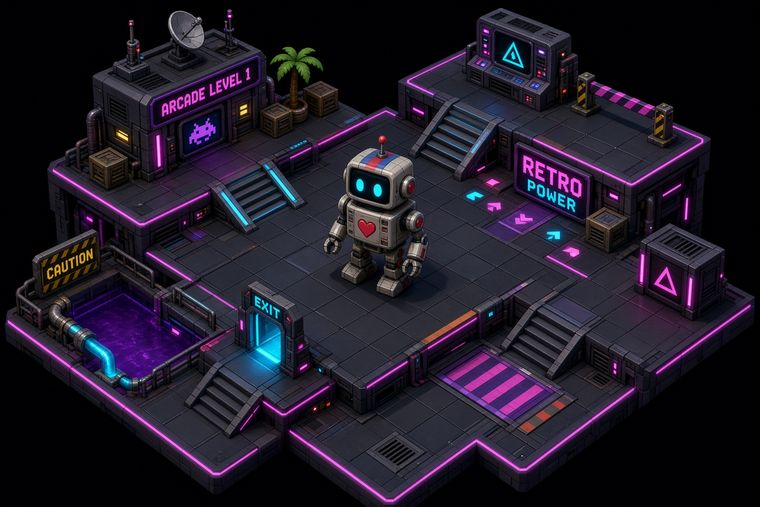

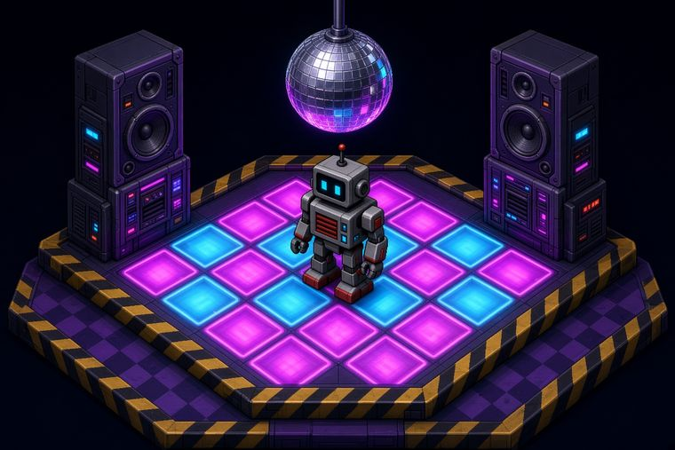
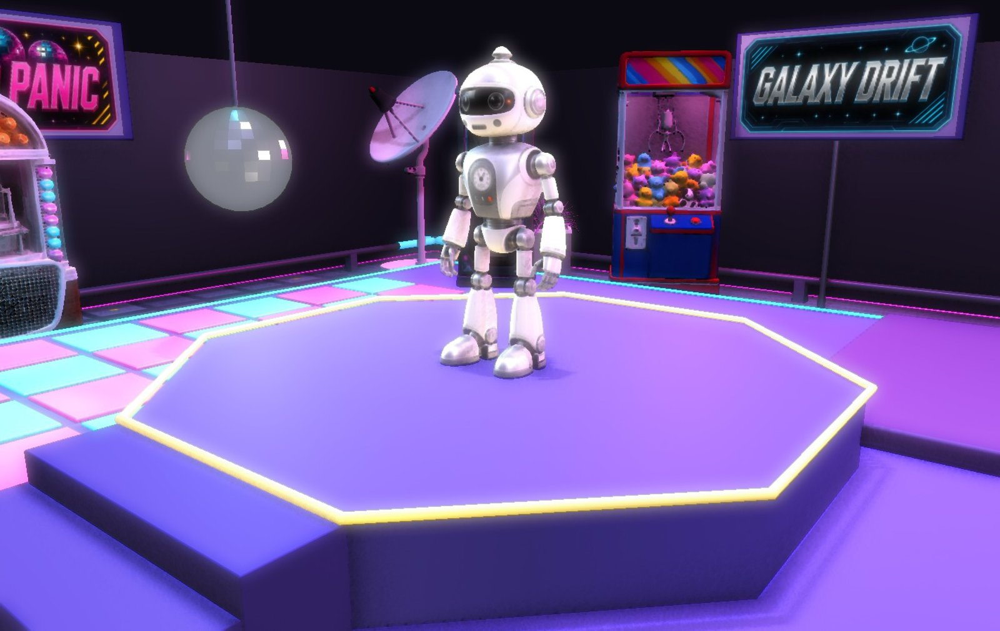
Warming up the cabinet. The live scene drops in here in a moment.
A WebGL study in animation, controls and interaction
An isometric arcade that closed decades ago, still running on its final credit. Behind this text the robot is idling on his podium, live — scroll to the end and the camera pulls back over the floor, where you can make him dance. Every prop, sound and voice line here was generated and wired by hand.
Scroll — the camera pulls back
Marquees and props, generated for the level and cut by hand. The three signs are mounted on posts in the scene; the props were reconstructed into 3D and placed on the floor.
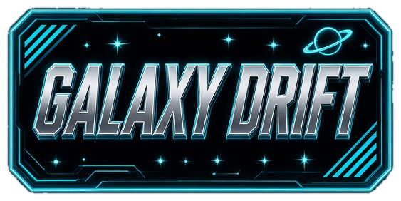
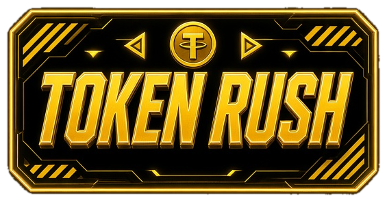
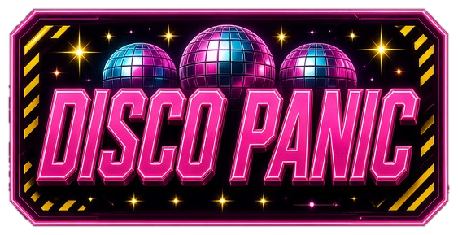
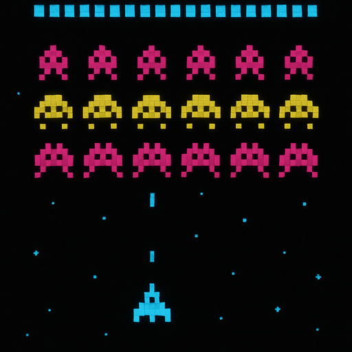
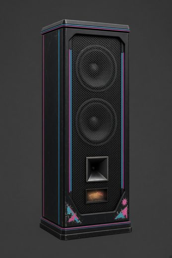
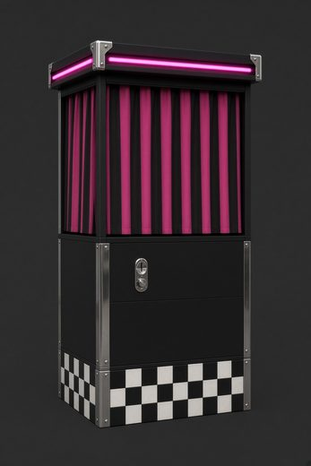
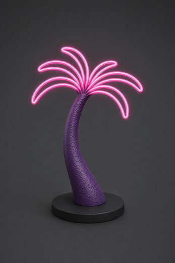
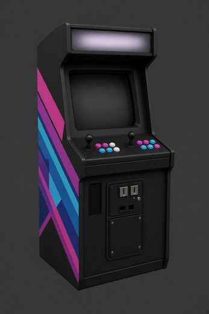
Before anything was modelled, the level was argued out in pictures: how high the neon sits, where the checkerboard stops, what a station looks like from above. Most of these never made it in whole, but they set the palette and the rules.
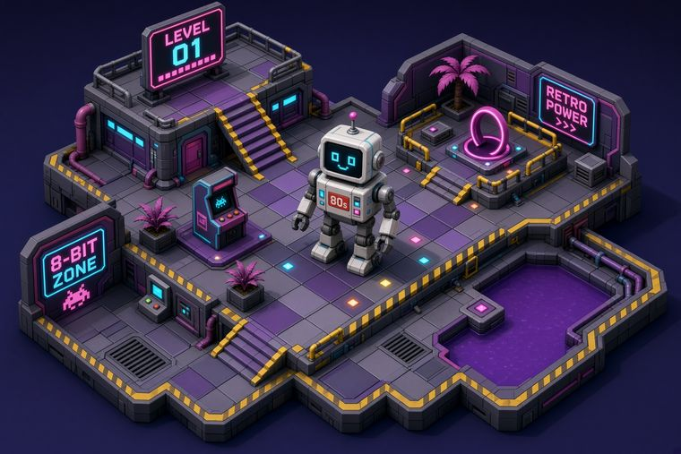
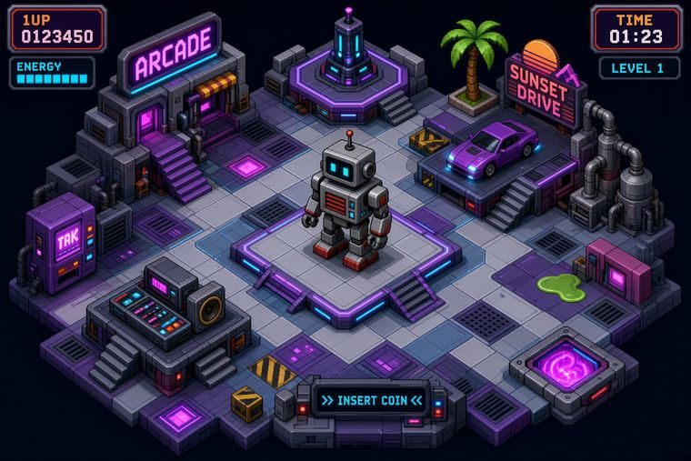
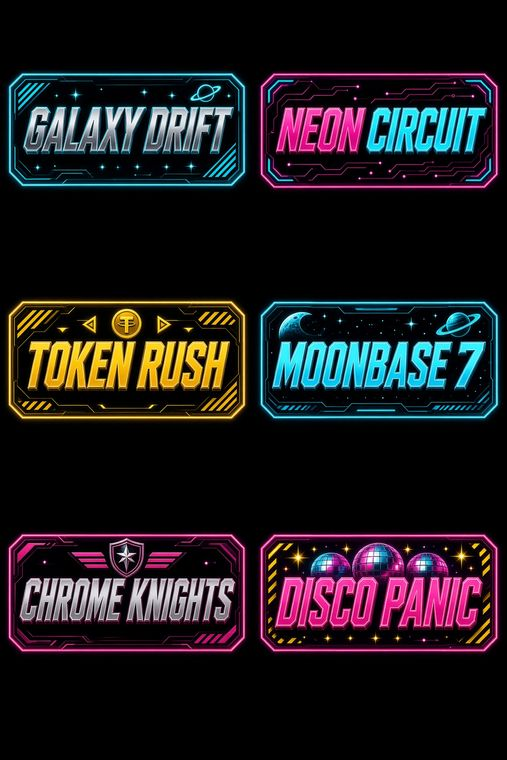
The hero took the longest road: drawn, reconstructed into geometry, rigged, then rebuilt again in Blender when every clip turned out to float a few units above the floor.
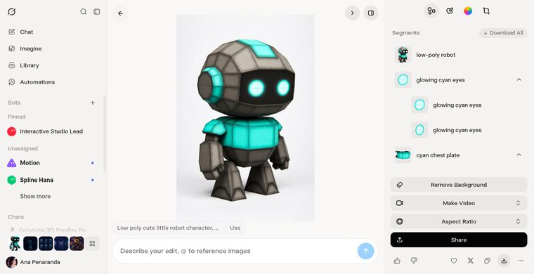
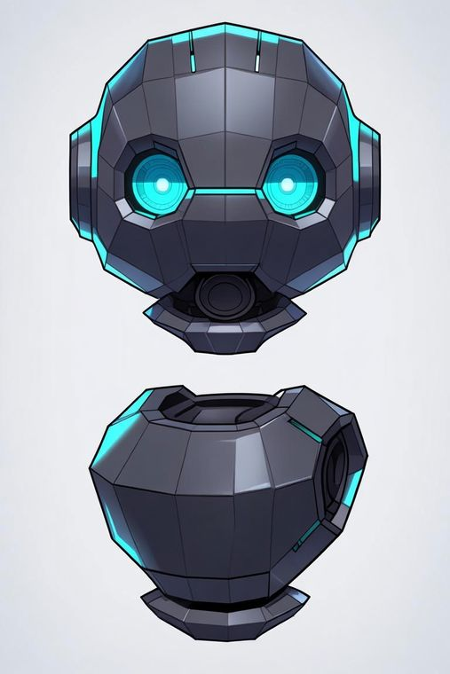
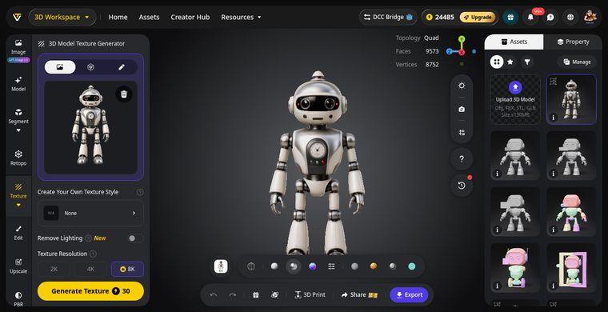
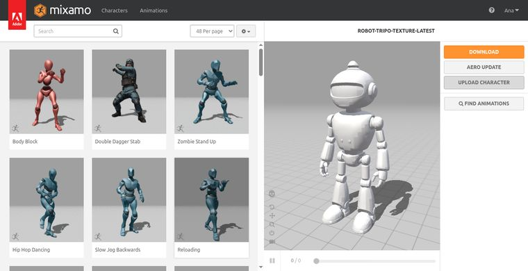
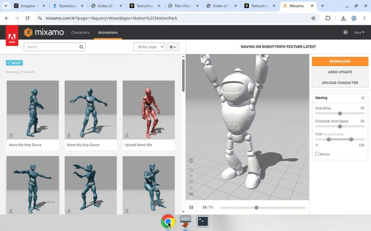
Two kinds of WebGL on one page: the scene above was authored in an editor and driven by events, this horizon is one quad and a fragment shader, roughly forty lines of maths. Same pixels, opposite ends of the craft.
Four pipelines feeding one real-time scene, wired through its event system.
Mixamo clips rebuilt in Blender into a single multi-clip GLB. Importing clips as separate files made the engine keep the base hips height, so every animation floated above the floor. One file fixed it at the source. Eleven clips: idle, walk, run, jump, wave, cheer, thumbs up, look around, samba, hip hop, zombie.
Single-subject references generated per prop, then reconstructed with Tripo image to 3D at v3.1 Ultra: triangles, 40k cap, 8K texture bake exported at 2K, lighting removed from the albedo so the scene's own neon does the shading.
Every effect is synthesized, not sampled: the shutter is a capacitor whine plus a noise burst, the dance stab is a square-wave arpeggio, the soundtrack is a 120 BPM loop built from kick, snare, hats, square bass and saw arp. The announcer is text to speech directed to sound like a cabinet.
Trigger zones and conditionals would not fire, so the zones became collision pads that move. A pulsing podium and the bouncing dance tiles re-touch the robot every beat, set a variable, and that variable is bound directly to the effect's geometry. No conditionals anywhere.
Everything that loops runs on the same 120 BPM grid: the floor ripples in quarter-beat steps, the speakers and radio move on the beat, the disco spots sweep every sixteen. The scene pulses with the music rather than near it.
Twelve lights, exactly one casting shadows. Past that, imported PBR props silently stop rendering while still casting shadows, a failure that looks like a broken import and is not. The disco beams are real spotlights; the earlier mesh beams kept shoving the robot off the stage.
Press a button and watch the robot. Walk him with the pad or the arrow keys.